Product examples are for general education, not an individual treatment plan. Follow current labels and ask your dental team what suits you. Product disclaimer.
Find your everyday essentials
Your oral care shelf
A thoughtful look at everyday essentials, with practical guidance to help you choose.
Gum care
Build your routine around brushing and cleaning between teeth. Mouthrinse can be an addition, but does not replace those steps or professional treatment for gum disease. Ask your dental team which rinse fits your needs.
Electric Toothbrush: Oral B iO
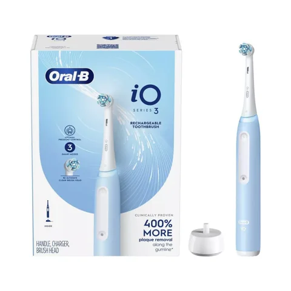
At a glanceAn electric toothbrush option for your daily brushing routine.
Electric Toothbrush: Sonicare ProtectiveClean
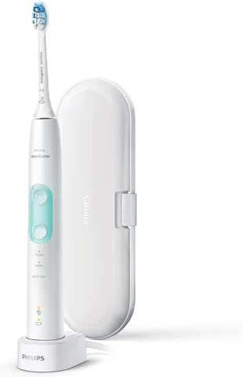
At a glanceAnother electric toothbrush option to discuss with your hygienist.
Waterflosser: Oral B Cordless Waterflosser
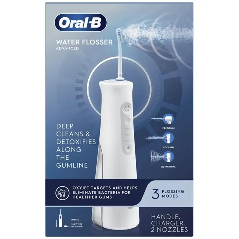
At a glanceA water flosser option for cleaning between teeth.
Mouth Rinse: iO Rinse
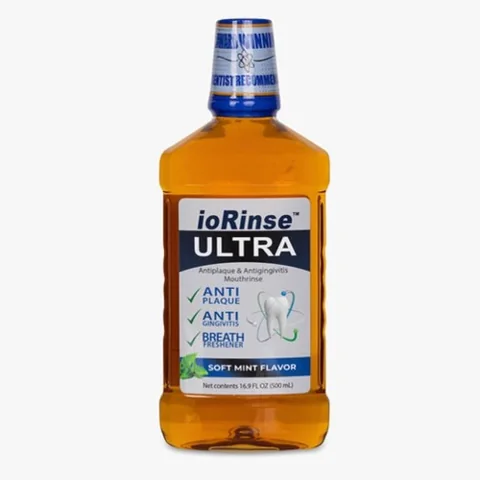
At a glanceA mouthrinse to discuss with your dental team before choosing.
Dry mouth
Dry mouth products may temporarily improve comfort. Persistent dryness deserves an assessment of possible causes, including medications. Sip water and ask your dental team about protecting your teeth.
Biotene Dry Mouth Lozenges
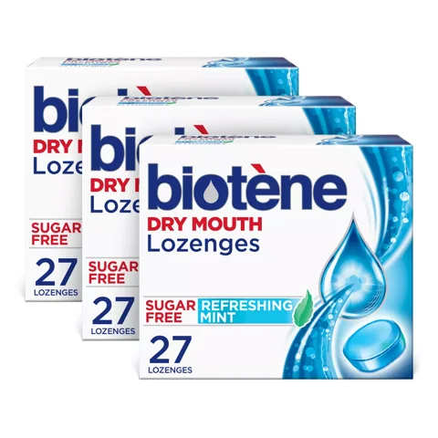
At a glanceLozenges marketed for dry mouth comfort; check the package directions.
Xylimelts
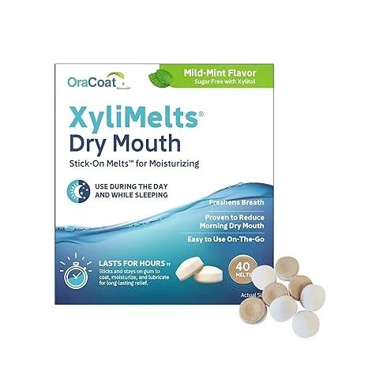
At a glanceAdhering dry mouth tablets; follow the product’s use and safety directions.
Bad breath
Persistent bad breath is a reason to check in with your dental team. Tongue cleaning and an appropriate rinse may be part of your routine; a rinse alone may only mask an underlying problem.
Bad Breath Mouth Rinse: Therabreath Deep Clean
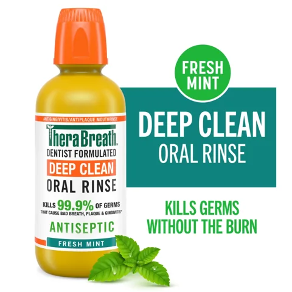
At a glanceA mouthrinse option; check the label for its intended use.
Bad Breath Mouth Rinse: Listerine Antiseptic Cool Mint
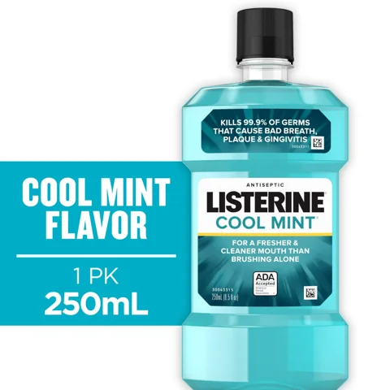
At a glanceAn antiseptic rinse option; check the label and suitability.
Whitening
Whitening schedules depend on the product and concentration. Follow its directions and discuss suitability with your dentist. Sensitivity and gum irritation can occur. Whitening toothpastes mainly remove surface stains; bleaching changes natural tooth color but does not whiten restorations.
Opalescence Whitening Gel 15% Syringes
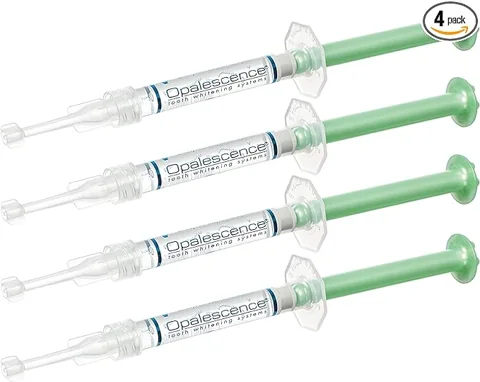
At a glanceWhitening gel: ask your dentist about trays, suitability, and wear time.
Opalescence Go Trays
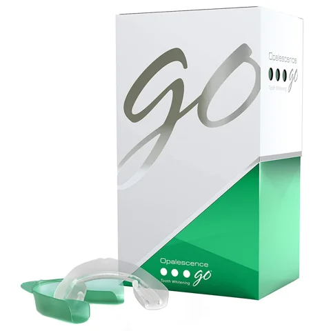
At a glancePrefilled whitening trays: follow the specific package schedule.
Crest 3D White Strips
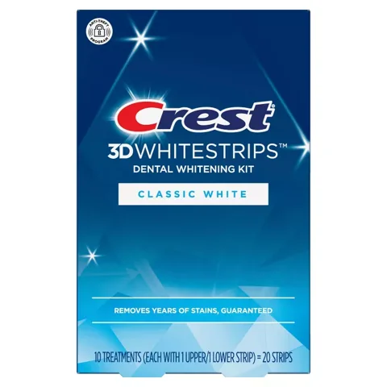
At a glanceWhitening strips: follow the directions for this exact formulation.
These are Maddie’s existing product picks, not a treatment plan. Check the current label, directions, price, and availability with the retailer. Sources checked October 1, 2026: ADA: mouthrinse, ADA: dry mouth, ADA: whitening, and NIDCR: tooth decay.